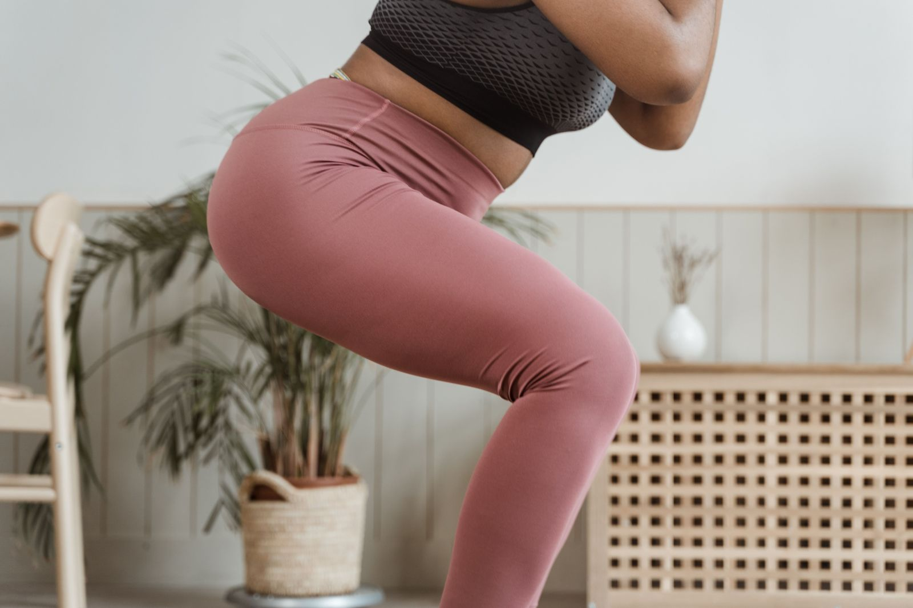

Fashion brands invest heavily in how their products look online. Beautiful photography, carefully styled campaigns, polished websites and compelling brand stories.
And rightly so. Fashion is visual.
But there's a difference between making someone want a garment and making them feel comfortable buying it.
A shopper might love the way a dress looks on a model, yet hesitate because they don't know whether the fabric will cling around their stomach. Someone might be ready to spend $300 on a cashmere sweater but wonder how it will hold up after repeated wear.
These unanswered questions can stall an otherwise promising purchase.
And too often, fashion ecommerce stores underestimate how much those questions influence the buying decision.
01. Product information isn't the same as reassurance
Take a pair of leggings described as having four-way stretch, a high-rise waistband and a nylon-elastane blend.
That tells someone what the leggings are made of.
But what if their real concern is whether the waistband will roll down during exercise? Or whether the fabric will become sheer when they squat?
The product description might be completely accurate while still failing to answer the questions that matter.
This distinction is particularly important in fashion. Customers are imagining how the garment will look, fit and feel on their own bodies, alongside evaluating its listed features.
A stronger product page translates verified product attributes into outcomes that customers can understand.
Rather than simply stating that a garment is double-lined, explain what that construction means for coverage, where that benefit has been established. Better still, demonstrate it through relevant photography or video.

Useful product information answers the questions shoppers actually have.
02. They hide their strongest reassurance
Sometimes the information a shopper needs already exists on the website.
It's just in the wrong place.
Consider a premium knitwear brand offering garment repairs and aftercare advice. Those services could help reassure someone wondering whether an expensive sweater is worth the investment.
But if they're only mentioned on a separate care page, customers might never discover them while considering the purchase.
The same applies to fitting consultations, size exchanges, garment measurements and delivery information.
A founder might know these services are available. A first-time customer probably doesn't.
And expecting someone to search through multiple pages to find reassurance creates unnecessary friction.
The better approach is to bring relevant reassurance closer to the decision it supports.
If someone is selecting a size, make fitting support easy to find there. If they're considering an expensive garment, surface the care and repair services that support its long-term value.
Small changes in where information appears can make the buying experience clearer without redesigning the entire store.
03. They treat every fashion customer the same
A customer buying an everyday T-shirt has different concerns from someone hiring an evening gown for a wedding.
For the customer hiring occasionwear, the decision might depend on whether the garment will arrive in time, how confidently they can choose a size, and what happens if the fit isn't right.
For someone ordering made-to-measure clothing, the concern might be whether they understand and trust the fitting process before committing.
And for a parent purchasing activewear for their daughter, coverage, comfort and suitability may matter just as much as how fashionable the clothing looks.
Yet many stores organise their buying experience around the same familiar elements: product images, descriptions, size selectors and an add-to-cart button.
Those elements are necessary. But they don't necessarily answer what matters most to that particular customer.
Understanding buying confidence starts with understanding who is buying, what they're buying for, and what could make them hesitate.
Only then can a brand decide what information, reassurance or functionality deserves priority.
04. They assume hesitation is a pricing problem
When shoppers aren't converting, discounting can seem like an obvious solution.
But a lower price doesn't necessarily resolve uncertainty.
Someone who doesn't know whether a dress will fit for an important event may still hesitate at 20% off.
A shopper who's uncertain about the quality of an expensive garment might still be reluctant to order, even with free shipping.
Clearer model measurements, better photography of how the fabric moves, more visible fit guidance or a straightforward explanation of the exchange process could help address those concerns.
These changes don't guarantee a conversion increase. Their value depends on what customers are actually struggling with.
Addressing those uncertainties can help shoppers feel more confident about buying, while protecting the brand's margins.
The real opportunity
Understanding the decision from the customer's perspective should come before adding more badges, copy or features to a product page.
What are they trying to establish before buying? What could go wrong from their point of view? And does the website give them enough evidence to make that decision comfortably?
Sometimes the answer is a clearer explanation. Sometimes it's a better image. Sometimes it's making an existing service more visible.
Start with the questions that matter most to your customers, and make the answers easier to find.